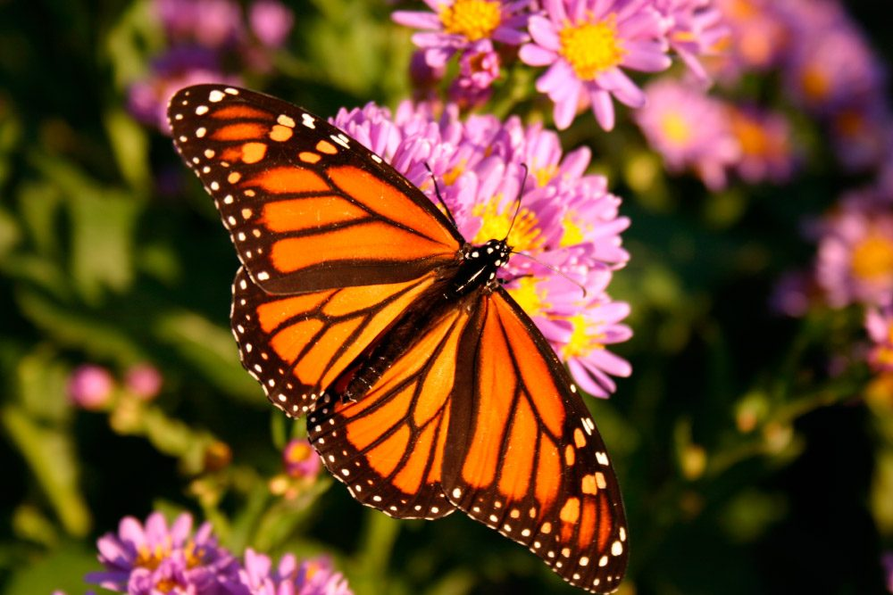

Mundo de las Mariposas
Explora la vida de uno de los insectos más asombrosos del planeta.
Tarjeta Informativa

Mariposa Monarca
Es una especie migratoria que viaja miles de kilómetros cada año desde Canadá hasta México.
Leer másInformación Detallada
Son famosas por su impresionante migración de hasta 5,000 km desde Canadá y EE.UU. hasta México, donde invernan. La generación "Matusalén" vive hasta 8 meses para completar este viaje, a diferencia de las 4-5 semanas de otras generaciones. Son venenosas por comer algodoncillo y se guían con sus antenas como GPS.
CARACTERÍSTICAS
Apariencia física: Alas naranjas con venas negras, borde negro con manchas blancas dobles. La parte inferior es más pálida para camuflarse.
Dimorfismo sexual: Los machos son ligeramente más grandes, tienen venas más delgadas y una mancha negra (androconia) en cada ala trasera. Las hembras tienen venas más gruesas.
Vuelo lento: Vuelan lentamente, a unos 9 km/h, y baten sus alas entre 5 y 12 veces por segundo.
Galería Visual

Ciclo de Vida
Desde el huevo hasta la mariposa adulta.

Hábitat Natural
Espacios vitales para su alimentación y reproducción.
Notificaciones
🦋 Info Mariposa
Anatomía curiosa: Tienen seis patas, pero solo usan cuatro para caminar; las dos delanteras son vestigiales (no funcionales).